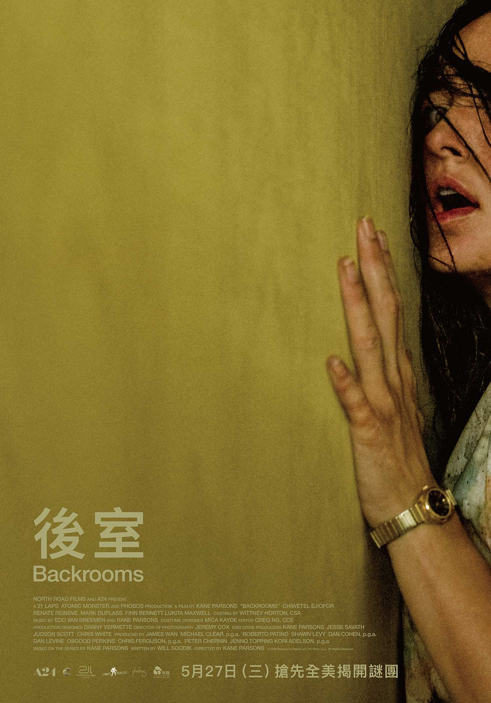

|
有些恐怖不是突然嚇你一跳，而是讓你明明坐在螢幕前，卻覺得自己也被困在裡面。 有些恐怖片是看完後才開始害怕，但《後室》（Backroom）對我來說，是還沒完全看懂以前，身體就先投降了。第一人稱視角不斷晃動，昏黃空間一層又一層重複，角色往前走，我也像被迫跟著走。看到後來，我最強烈的反應不是尖叫，而是：我好像快吐了。 後室的誕生：從一張「不恐怖但很怪」的照片開始 「後室」最有趣的地方，是它一開始並不是一個完整的恐怖故事，而是從網路上一張看似普通、卻讓人感到詭異的照片開始。 2019 年，4chan 上有使用者發起討論，想蒐集那種「畫面本身沒有明顯可怕元素，卻讓人覺得不太舒服」的圖片。後來，一張空無一人的室內照片被貼出來：泛黃牆面、米色地毯、日光燈，空間像辦公室，又像某個過時商場的角落。畫面裡沒有鬼，也沒有血腥，但就是讓人覺得哪裡不對。後來有人接著為這張照片寫下設定：如果你不小心從現實中「卡出去」，就會掉進 Backrooms。於是，這個原本只是「不恐怖但很怪」的畫面，慢慢被擴寫成網路都市傳說。 後來，年輕創作者 Kane Parsons 在 YouTube 上用類紀錄影像與第一人稱視角拍出《The Backrooms (Found Footage)》，讓後室不再只是網路怪談，而像真的有人曾經闖入那個空間。 第一人稱：失去安全距離 電影大量使用第一人稱視角，讓我幾乎沒有辦法和角色保持距離。平常看電影時，我們還可以提醒自己：「我只是坐在螢幕前看故事。」但《後室》不太給觀眾這種安全感。鏡頭看到哪裡，我就只能看到哪裡；角色往哪裡走，我也只能被帶著走。 這種拍法雖然讓我很暈，甚至有點反胃，但也讓恐怖感更直接。它不是要我理解主角的恐懼，而是逼我用身體感覺那種恐懼。當畫面晃動、空間狹窄、出口遲遲沒有出現時，我感受到的不是單純緊張，而是一種很想逃出去的壓迫感。 可怕的不是怪物，是走不出去 《後室》最可怕的地方，對我來說不是怪物，而是那個空間本身。昏黃燈光、重複牆面、沒有盡頭的走廊，單獨看都不算恐怖，但組合在一起後，卻讓人越看越不安。 當空間一直重複，方向感慢慢消失，出口也不再可信，人就會開始懷疑自己是不是還在現實裡。這讓我聯想到某種現代焦慮：我們每天在辦公室、會議室、走廊與電梯之間移動，看似正常，但有時也會突然覺得自己只是被困在重複的生活節奏中，不知道真正的出口在哪裡。 所以後室不只是恐怖場景，也像是一種精神狀態。它讓人感覺自己沒有被直接攻擊，卻正在被慢慢消耗。 「它屬於那裡」：被空間同化的人 片中有一句話讓我印象很深，是男主角說他覺得「他屬於那裡」。我一開始不太懂，但後來覺得，這可能不是單純在說某個人或某個東西應該待在後室，而是在說一種被空間同化的狀態。 當人長期被困在壓抑、重複、沒有出口的地方，他可能會慢慢習慣，甚至開始相信自己本來就屬於那裡。這句話聽起來像是在評價別人，但也可能透露出說話者自己早已被那個空間影響。可怕的是，一個人不一定是被怪物吞掉才算消失；有時候，是他慢慢接受了那個困住他的地方。 不喜歡，但很難忘 我不會說自己很喜歡《後室》。它真的讓我覺得暈，也沒有給我一般電影那種完整的滿足感。但我會覺得它是一部很有記憶點的作品。它厲害的地方不是故事多複雜，而是成功創造出一種熟悉又陌生、明亮卻壓迫、沒有明確危險卻讓人想逃的氛圍。如果把它當成一般恐怖片來看，可能會覺得劇情不夠清楚；但如果把它當成一場空間惡夢，或一種現代焦慮的影像化，它就變得很有意思。 對我來說，《後室》最可怕的地方，不是它讓我看見什麼，而是它讓我開始懷疑：是不是每個人心裡，都有一個走不出去的後室？  後室 Backrooms 2026-5-27 |
《後室》一場讓人想逃出去的空間惡夢
張之逸│全球人力資源中心＼組織溝通與文化處